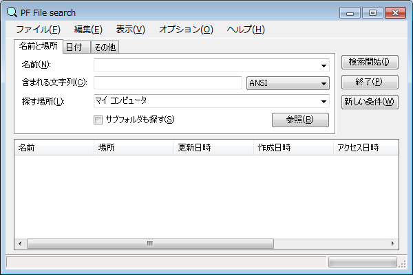
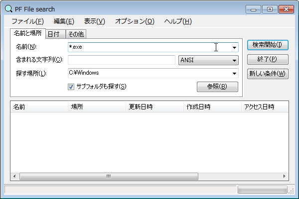
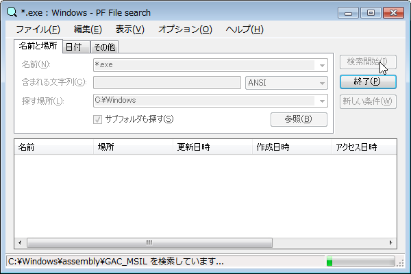
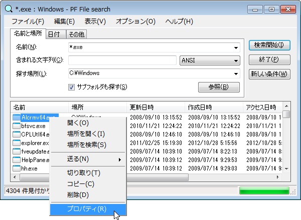
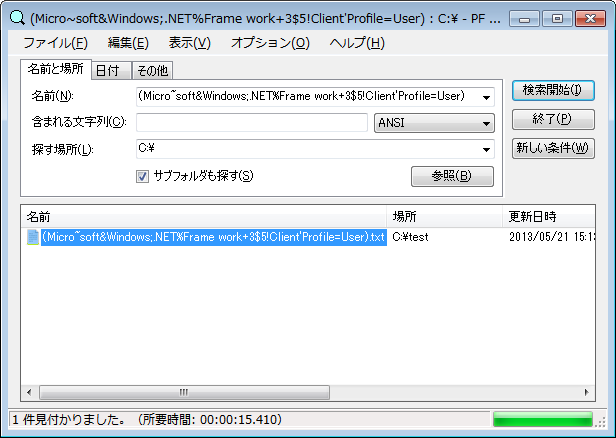
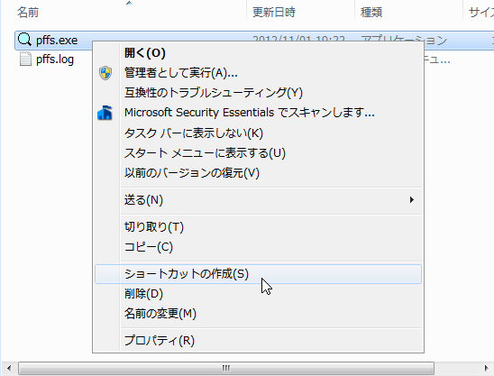
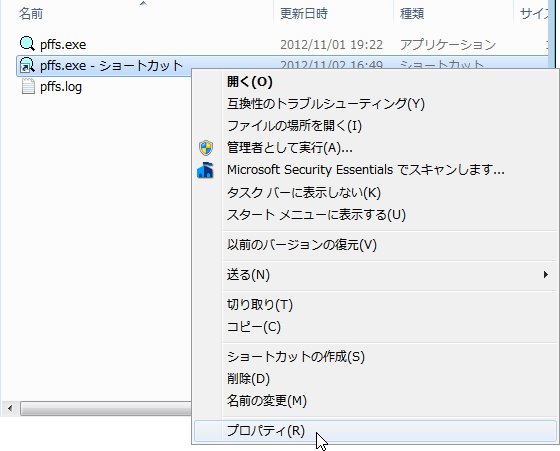
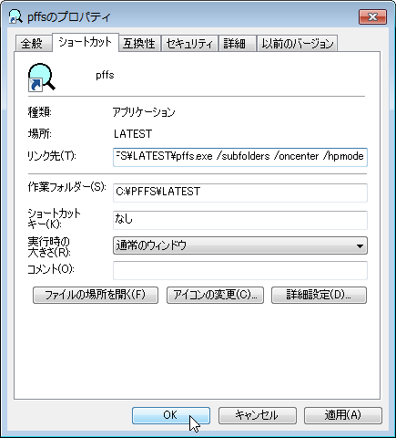

調べたい場所をクリックすると説明を表示します。


検索開始ボタンをクリックして検索を開始します。

検索が終了すると、ファイル一覧ビューにファイル一覧が表示されます。
検索結果から、ファイルの操作をする事が出来ます。

[オプション]の[空白を含める]を有効にすると、Windowsのファイル／フォルダ名に使用可能な全ての文字を検索する事が出来ます。
起動時にコマンドライン引数を指定すると、任意の設定で起動する事が出来ます。
ショートカットを作成する例を説明します。

pffs.exe を右クリックして、[ショートカットの作成]をクリックします。

作成されたショートカットを右クリックして、[プロパティ]をクリックします。

[リンク先]の最後に、半角スペースと引数（下記）を追加します。
| /oncenter | :画面中央で起動する |
| /subfolders | :サブフォルダも探す |
| /includespace | :空白を含める |
| /sensitive | :大文字と小文字を区別する |
| /useregex | :正規表現を使用 |
| /hpmode | :ハイパフォーマンスモード |
| /parallel | :並列処理 |
| /skipreparsepoint | :サブフォルダも探すを有効にした時、リパース ポイント(ジャンクション等)が設定されたサブフォルダは検索しない |
引数は複数指定する事が出来ます。順序は関係ありません。
[OK]をクリックし、後は作成したショートカットから起動すれば指定された状態で起動します。
尚、右クリックメニューにより設定されたコンテキストメニューの[PFFSで検索]の起動オプションは、設定時のPFFSの状態で設定されます。